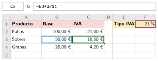

Referencias relativas, absolutas y entre hojas
Criterios: 3a, 3b
🤔 Pienso10 min
Qué hago aquí: Piensa un momento y contesta con lo que ya sabes. No pasa nada si no lo sabes: es para empezar.
El IVA (21 %) está en la celda F1. En C2 escribes
y funciona. Al copiarla hacia abajo, en C3 sale 0. ¿Qué fórmula crees que hay en C3?
📖 Leo y aprendo40 min
Qué hago aquí: Lee despacio, mira los dibujos y los ejemplos, y quédate con la idea clave del final.
Al copiar una fórmula, Excel cambia sus referencias: si bajas una fila, suman una fila; si vas una columna a la derecha, suman una columna. Es una referencia relativa.
Pero a veces una celda tiene que quedarse fija: el tipo de IVA, el porcentaje de comisión, un descuento… Para eso se usa una referencia absoluta, con el signo $ delante de la columna y de la fila: $F$1.

| Referencia | Ejemplo | Al copiar la fórmula… |
|---|---|---|
| Relativa | F1 | cambian la columna y la fila. |
| Absoluta | $F$1 | no cambia nada. |
| Mixta | F$1 | cambia la columna; la fila 1 queda fija. |
| Mixta | $F1 | cambia la fila; la columna F queda fija. |
También puedes usar datos de otra hoja: se escribe el nombre de la hoja, una exclamación y la celda.
trae la celda B3 de la hoja Precios. Si el nombre tiene espacios, va entre comillas simples:
. Lo más fácil es escribir =, ir a la otra hoja, hacer clic en la celda y pulsar

.
✏️ Hago160 min
Qué hago aquí: Haz las actividades en orden. Empieza siempre por las básicas.
Copias
de C2 a C5. ¿Qué fórmula queda en C5? ¿Y si la fórmula fuera
?
Haz los ejercicios de cantidad, precio, base imponible, IVA y total. Primero escribe el IVA en cada fórmula; después, en una celda aparte, y usa $.
Completa el control de ingresos del primer semestre: el IVA de cada mes con el tipo de la celda G4 y el total. Copia las fórmulas hacia abajo.
Papelería Sena. Completa la factura con lo aprendido. Después, en otra hoja, haz la factura número 2 con cuatro productos. Los precios deben venir de la factura 1 con referencias a la otra hoja.
En la lista de precios, calcula el precio final con tarjeta (con un recargo del 10 %) y al contado (con un descuento del 5 %). El recargo y el descuento están en dos celdas aparte.
- Fórmula del precio con tarjeta:
- Fórmula del precio al contado:
Quieres hacer una tabla de multiplicar en B2:J10, con los números del 1 al 9 en la fila 1 y en la columna A. Escribe la fórmula de B2 que se pueda copiar a toda la tabla.
🚀 Amplío (si quieres saber más)
Qué hago aquí: ¿Has terminado? Lee la curiosidad o elige el reto. Es voluntario.
Pon nombre a las celdas del recargo y del descuento de la actividad 5.4.5 y reescribe las fórmulas con esos nombres.
✅ Compruebo10 min
Qué hago aquí: Contesta sin mirar la ficha y marca cómo lo llevas.